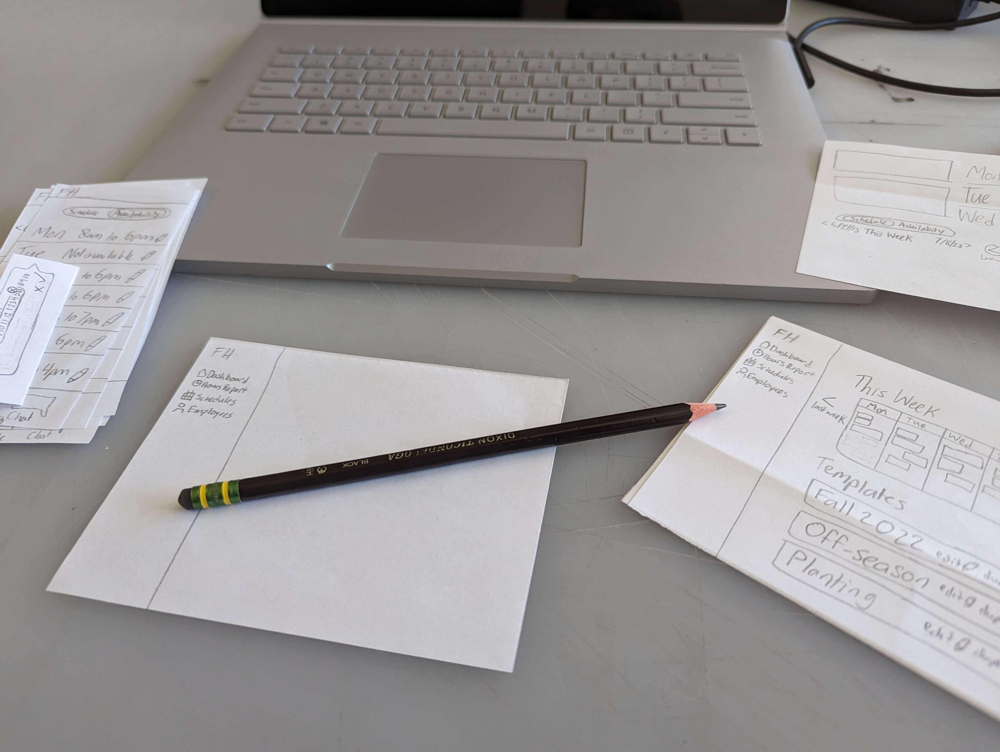
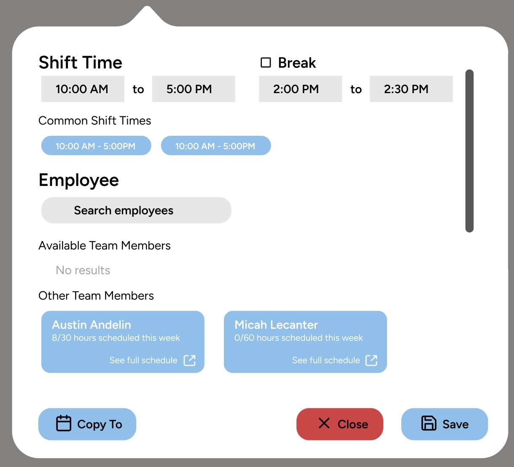
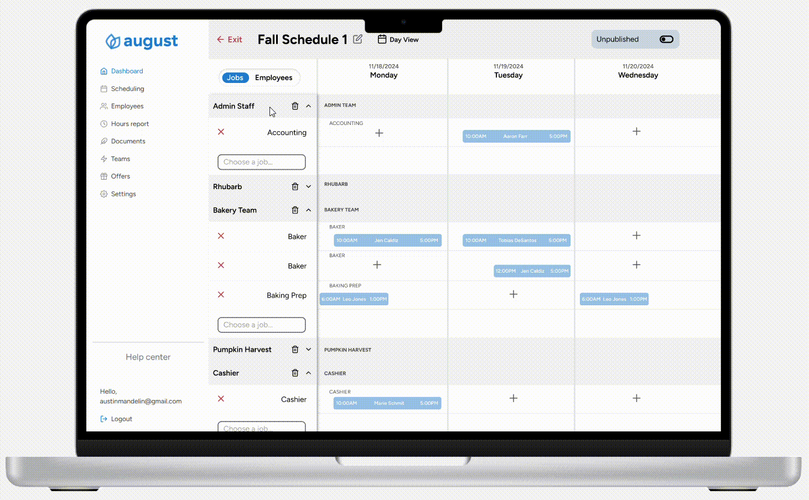

August
August is a HR platform specialized in the needs of seasonal businesses. Originally called Farmhand, it came from my family's own experience struggling to manage our growing pumpkin patch. Developed by my brother, we wanted to make a product that was focused from the ground up on the unique scheduling and employee enviroment of seasonal business.
Strategy & Scope
One of the core features that needed to be done right was the scheduling. It was the most mentioned headache that we heard at tradeshows and industry groups, and no one seemed too satisfied with their current solution. There are plenty of other features to August, however this case study will be only for the scheduling feature as it relates to the web and mobile app products.
User Research
I began with interviewing other farms and festivals. One particular need that came up again and again was that managers wanted to create schedules based on the positions or tasks, not the employees. One person said "I think of scheduling as creating needs first, then putting people in those needs." This mindset was common, as there is so much variability in what employees a manager has from week to week. A schedule set up in this way would allow for beter adaptability and quickly shifting a schedule into future weeks.
Early paper prototypes.
Version One Prototype
After three rounds of usability testing (paper, lo-fi, hi-fi prototypes), I had created a prototype of a scheduling system that would bring great benefit to customers.
One Year Later
The schedule redesign launched, and generally users were very satisfied with the experience. Farmhand was rebranded to August as the clientbase grew. A year after the redesign we revisited with some customers to get feedback on the last season. Through that feedback we knew some changes were needed. The scheduling steps that were intended to guide the user through creating a schedule was instead a hinderance, with many users switching back and forth in the process of editing their schedules.
We went back to the drawing board on how we wanted the scheduling flow to function. It needed to be fast to start from zero and easy to input repetitive data. This lead to a new modal design for creating a shift, with the employee selection built in. I also added a new 'Copy To' feature, which allowed users to quickly copy a shift to another day.
Early design of the new shift modal.
Version Two Prototype
As of writing, our customer's seasons have not started. However, inital testing and demos have shown that this redesign has greatly improved the speed and ease of creating a schedule using August.
Final prototype of the new scheduling design.